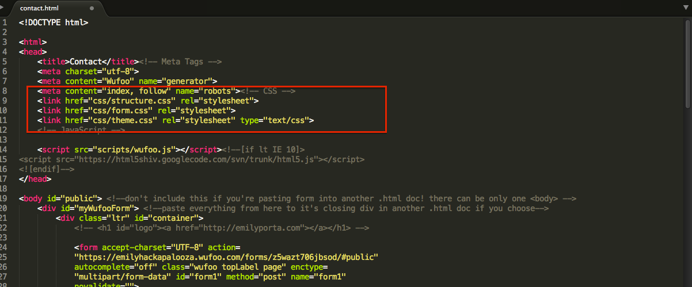
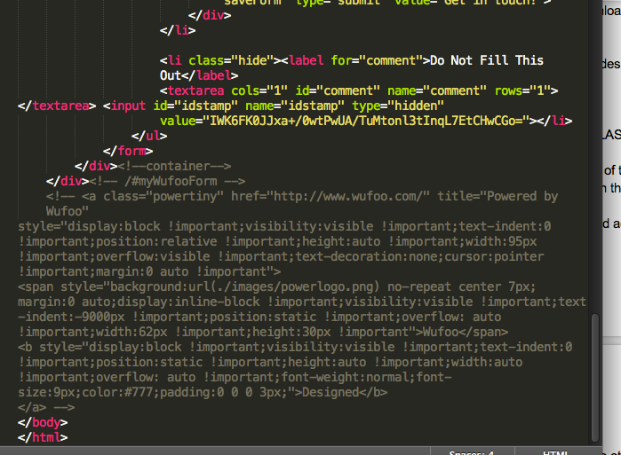

Let's Connect: Adding and Styling Contact Forms
Welcome! This class will teach you how to create a great, totally customized contact form for your site. Let's get started!
Let's Connect: Adding and Styling Contact Forms
Your Instructor:

Course Outline
Part One: Forms in the Wufoo Editor
- Why do we want a form? Where should we put it?
- Wufoo and why we're using it
- Basic wufoo form creation and customization
- Getting your form on your site
- Viewing submissions
Course Outline (Cont.)
Part Two: Editing Wufoo's HTML and CSS
- Let's get complicated! Downloading and going through Wufoo's form docs
- The web inspector: u need dis
- Removing what we don't want, adding what we do: HTML
- Styling our forms with CSS: how to and best practices
- Time to style your own form
- Styling suggestions
- Wrap up and question time!
Part One: Forms in the Wufoo Editor
Why do we want a form? Where should we put it?
- Give your users multiple ways to contact you
- Look more professional
- Best form locations: on it's own page (eg. contact.html) OR in the footer or last section of your homepage
- Put your form where your user expects it to be
Part One: Forms in the Wufoo Editor
Wufoo and why we're using it
- We don't want to bother having to do our own back-end "stuff"
- Gives us a nice user interface to work with
- Makes it easy to see changes to the HTML, and we don't have to worry about all the crazy form elements
Part One: Forms in the Wufoo Editor
Wufoo and why we're using it (cont.)
Let's get familiar with Wufoo:
Go to Wufoo.com and sign up for a free account
Click on "Forms" > "New Form!"
We now see the form editor. Here you can do three main things: add fields, change field settings, and change the form settings.
Let's add some fields! Just click on the ones you want to add, and you'll see them populate on the right.
Part One: Forms in the Wufoo Editor
Basic wufoo form creation and customization: fields
Once we've added the fields we want, go to "field settings"
Note you can click on the little "?" if you don't know what something is for.
Try things out and see what they do, and edit the content to make it say what you want.
Part One: Forms in the Wufoo Editor
Basic wufoo form creation and customization: fields (cont.)
Next, go to "form settings"
Make sure you edit the form confirmation settings: this is what the user will see after their form is submitted!
I suggest sending a confirmation email to the user, and using the "auto" choice for the CAPTCHA
Click "save form" and you're done!
Part One: Forms in the Wufoo Editor
Basic wufoo form creation and customization: fields (cont.)
What you've just done is make the HTML for the form. Now we want to tell Wufoo to generate the CSS we want.
We'll also see how making a form this way limits us.
Part One: Forms in the Wufoo Editor
Basic wufoo form creation and customization: themes
Go to the "themes" tab. Note that the themes are separate from the form itself, just like your CSS file is independant from your HTML doc until you link it.
Let's play around with the various options in the Theme Designer
When you're done, click "save theme" in the top right corner.
To apply your theme to your form, go to the "Forms" view, and from the dropdown box that says "Default Theme" choose the name of your theme.
What's something you might want to change but can't?
Part One: Forms in the Wufoo Editor
Getting your form on your site
Now we can put your form on your site, using an embed.
Go back to the "Forms" tab, and click on "Code"
Click on "Embed Form Code", and the copy everything in the text box labelled "Javascript version"
Open up the html document that your website lives on...
Part One: Forms in the Wufoo Editor
Getting your form on your site (cont.)
Paste this embed code wherever you want your form on your website (ideally the footer or the last section before the footer).
you can make a div to put it in if you want, with a class or ID of, say, myWufooForm, or add a class to their div (don't replace their ID).
Part One: Forms in the Wufoo Editor
Getting your form on your site (cont.)
Here's an example:
http://goo.gl/46yeos(the code)
http://goo.gl/UmSTx2(the result)
Part One: Forms in the Wufoo Editor
Viewing Submissions
let's type in a mock submission to this form, and then go track down the submission on Wufoo.Remember to use @example.com for the email address.
Now, head over to wufoo.com again, and click on the name of the form you've embedded.
This will take you directly to the submissions page, and voila! You can see all the submissions made to your form. Click on any one of them to see details, delete it, make comments, etc.
Part One: Forms in the Wufoo Editor
All Done!
Congrats, we've now got a working contact form!
But I bet there's some things you'd like to change, especially with the look of the form. Well we're in luck - you can change everything about our form if we download and edit Wufoo's HTML and CSS for this form. Let's do it!
After a break :)
Part Two: Editing Wufoo's HTML and CSS
Let's get complicated! Downloading and going through Wufoo's form docs
We can still use the Wufoo form editor to build the HTML of our form - I'd suggest doing it this way because forms have so many special elements.
On the Wufoo website, navigate back to the main forms page. You can either create a new form or use the one we just made.
Make sure the theme in the drop-down box is set to "default".
Part Two: Editing Wufoo's HTML and CSS
Let's get complicated! Downloading and going through Wufoo's form docs (cont.)
Now click on "code" again, and this time click on "HTML/CSS Code" (it's the yellow one)
Click "download files" and unzip the folder. For now, just keep this folder on your desktop so we can find it easily.
Open up the folder and rename the index.html file to "contact.html"
Part Two: Editing Wufoo's HTML and CSS
Let's get complicated! Downloading and going through Wufoo's form docs (cont.)
Let's take a look at the files and folders we've downloaded.
Open up all three CSS files, and contact.html in your text editor, and open the contact.html form in your browser.
Link your three CSS files to your contact.html file in the "head" area
IMPORTANT: Make sure theme.css is the LAST one before your head closing tag.
Part Two: Editing Wufoo's HTML and CSS
Let's get complicated! Downloading and going through Wufoo's form docs (cont.)
EXAMPLE:
Part Two: Editing Wufoo's HTML and CSS
Let's get complicated! Downloading and going through Wufoo's form docs (cont.)
Now let's comment out a few things we don't need, and add in a container ID so that the form is totally modular.
First, in the theme.css doc, comment out the following:
Part Two: Editing Wufoo's HTML and CSS
Let's get complicated! Downloading and going through Wufoo's form docs (cont.)
Add a div with an ID of "myWufooForm" around our form. Opening tag goes just after the opening body tag, closing tag goes just after the closing .container tag.
Also go to the contact.html file, and comment out everything at the bottom of the doc from the a class=powertiny opening tag to the line just before our closing body tag.
EXAMPLE:
Part Two: Editing Wufoo's HTML and CSS
Let's get complicated! Downloading and going through Wufoo's form docs (cont.)
Comment out the logo area on the html and css, comment out the html styles on the css, comment out the media query at the bottom of the CSS.
use #myWufooForm in front of every generic-sounding CSS selector (eg. .content, .container, html, body, .button, etc. If you want to be extra safe, put it in front of every selector!
Part Two: Editing Wufoo's HTML and CSS
Let's get complicated! Downloading and going through Wufoo's form docs (cont.)
ONE more thing: the HTML in contact.html is pretty ugly. Let's go to dirtymarkup.com to make it a little bit more presentable.
Cut EVERYTHING out of contact.html, and paste it in to the text box on dirtymarkup.com. Click "clean", making sure the HTML option on the upper left is selected (it's blue).
Copy the resulting prettified code, and paste it all back in to contact.html and save.
Now we're finally ready to edit our form!!!
(Short break if you need it)
Part Two: Editing Wufoo's HTML and CSS
The web inspector: u need dis
Let's go through some examples of what you might want to do with your form, and then you can do it on your own.
If you're having trouble locating what CSS form or where in the HTML an element lives, use the web inspector!
In Chrome or Firefox, in your browser open up contact.html and right click anywhere on the page, select "Inspect Element"
Part Two: Editing Wufoo's HTML and CSS
Removing what we don't want, adding what we do: HTML
Let's get familiar with editing Wufoo's docs by editing our HTML if we need to. For example, find some text you'd like to change and change it.
Remember to save your changes! If you don't know what something does, use the web inpector and/or ask a mentor! Don't change or add any IDs, classes, or divs at this point.
Take a few minutes to go over your content.html doc and make any changes you need to.
Part Two: Editing Wufoo's HTML and CSS
Styling our forms with CSS: how to and best practices
Now that our HTML is exactly how we want it, you can go ahead and style your form using the three css documents. Use the web inspector to see which form is affecting the style you want to change or remove. Most of it will be in theme.css
Remember to keep saving your work, and refreshing your browser to see what happens!
Part Two: Editing Wufoo's HTML and CSS
Time to style your own form
Keep styling! Ask me and the mentors for help. CMND+Z (on mac) and CTRL+Z (on pc's) will undo what you just did.
Suggestion: leave positioning to the end, maybe even until the open hack time.
You can see my example at: hackapalooza.emilyporta.com/contact-us/contact.html
Part Two: Editing Wufoo's HTML and CSS
Styling suggestions: SIMPLE and CLEAN
Colours: remember it's "color" not "colour" in your code. If you're not sure what colours to use, I like flatuicolorpicker.com. Try to stick to two to three colours at most.
Fonts: use what you learned in your typography session to try to add a google font. Keep it simple - ideally no more than two fonts!
Miscellaneous: to get rid of blue outline: textarea, input { outline: none; } BUT it’s good for accessibility, so keep it if you can! You can get rid of the yellow in form.css, under form li.focused {background-color: #fff7c0;}
Google fonts refresh: google.com/fonts, pick one, get the link, put in head, call it in the css with quotes around the name
Part Two: Editing Wufoo's HTML and CSS
Wrap up and question time!
Make sure you try out your form, log back in to Wufoo, and make sure the form is processing entries. Remember to use emails that end in "@example.com".
If it's not working, most likely the documents aren't linked correctly or your files are in the wrong/different directories. Ask the mentors if you can't figure it out, it's ok!
Part Two: Editing Wufoo's HTML and CSS
Wrap up and question time!
Questions?
If you think of questions later email at eeporta@gmail.com or tweet @agentemily
Thank you! And happy form making!
Emily Porta
Web Developer, Librarian, Form Lover